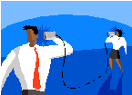

Emotional Intelligence
Corporate Training Materials
|
|
Page | 1
Intelligence is defined as a set of competencies demonstrating the
ability one has to recognize his or her behaviors, moods, and
impulses, and to manage them best according to the situation.
intelligent in your workplace. An employee with high emotional
intelligence can manage his or her own impulses, communicate
with others effectively, manage change well, solve problems, and
use humor to build rapport in tense situations. These employees also have empathy, remain optimistic
even in the face of adversity, and are gifted at educating and persuading in a sales situation and
resolving customer complaints in a customer service role.
Whatever the mind can conceive and
believe, the mind can achieve.
Dr. Napoleon Hill
|
 Page 2
learning, it occurs more easily and rapidly.
This workshop is designed to help you in the following ways:
Define and practice self-management, self-awareness, self-regulation, self-motivation, and
empathy.
Understand, use and manage your emotions.
Verbally communicate with others.
Successfully communicate with others in a non-verbal manner.
Identify the benefits of emotional intelligence.
Relate emotional intelligence to the workplace.
Balance optimism and pessimism.
Effectively impact others.
|
|
Page 3
Emotional Intelligence is a part of you that affects every aspect of your
life. Understanding the root causes of your emotions and how to use
them can help you to effectively identify who you are and how you
interact with others.
Experience is not what happens to you – it’s
how you interpret what happens to you.
Aldous Huxley
|
 Page 4
In order to effectively achieve your overall career objectives or the objectives within
a given task, you must use clearly defined methods to carry out those activities. This
includes the setting of goals, decision making, planning, and scheduling. Once the
tasks are completed, you must evaluate the success of these methods.
The following is a list of five key points to remember to help you master the art of
self-management.
Be consistent. Part of managing oneself is the ability to be stable. The values you hold dear
should always be transparent. Always changing can not only cause others to question your
beliefs, but it can also cause you to become confused about what you truly believe.
Stick to the plan. If you are scheduled to complete a particular task, do it. Don’t just do it, but
make sure it is done in a timely manner. It is easy to feel out of control when you disregard the
plan you are to follow.
Be accountable. There are times when things don’t work out as you plan, but you have to be
able to admit that and then use your flexibility to get things back on track. The ideal result is that
you easily bounce back and complete the task, but even during those times when this is not the
case, you are expected to adjust.
Educate yourself. We live in an ever-changing world and you want to be able to keep up with it.
Don’t let change pass you by, embrace it. Be an avid reader. Talk and listen to mentors and
peers. They may know something that could help you along your journey.
Stay physically fit. Many people don’t think of staying fit when they talk about self-
management, but it is a very important part of being able to practice the four preceding points.
Exercising your body is just as crucial to self-management as exercising your mind. A body that is
not well rested, nutritionally fed, or physically exercised can lead to emotional and physical
illnesses.
|
|
Page 5
Self-Awareness
Being ‘aware’ of one’s self is the ability to accurately perceive one’s skills and
knowledge, value and responsibilities. It is being confident in what you have to
offer, whether it is personally or professionally.
Self-awareness is not only important for one’s self-esteem, but it is also the first
step to the process of full acceptance or change. Without understanding why one
thinks the way he thinks or why he acts the way he acts, he may never fully appreciate himself or see
the importance of making changes to improve him, if necessary. Self-awareness gives power and a sense
of peace or happiness. This newly found strength will more than likely carry over into your work life,
how you perform your duties as well as how you interact with others.
The lack of self-awareness can cause you to not realize your worth in the company or even the quality of
the work you perform. This can have an even more dramatic effect when you hold a leadership position.
Not only will you have doubts about yourself, but the people you lead will also begin to question your
competence, which could ultimately lead to a lack of leadership effectiveness.
|
 Page 6
Self-Regulation is another term for ‘self-control’, which is defined as the ability to
control one’s emotions, desires, and behaviors in order to reach a positive outcome.
Self-regulation is sometimes difficult because of the phenomenon that it is
important to ‘express how you feel’. While this may be partially true, the art to
finding the balance between expressing one’s feelings and avoiding unnecessary
tension is self-regulation.
Self-Regulation is a direct reflection of the type of pressure one is experiencing. There are three types of
pressure:
1.
Good Pressure: This type of pressure is the result of an aggressive yet non-critical and non-
harmful atmosphere. One aspires to be like the people around them. This motivation leads to
the acquisition of self-regulation.
2.
Bad Pressure: Bad pressure is the when the atmosphere is critical and harmful. One has no
motivation and loses self-regulation.
3.
No Pressure: When one is not experiencing any pressure, they tend to act based on emotion,
since there is no one to compare themselves to.
|
|
Page 7
Andrew Carnegie said it best with his quote “People who are unable to motivate
themselves must be content with mediocrity, no matter how impressive their other
talents.” Self-motivation is an essential part of excelling at life. You must learn to
motivate yourself because you cannot depend on others to do it for you. You have
to know how to encourage yourself regardless of how bad the situation. There are
several keys to building self-motivation.
Work towards a cause.
Don’t compare yourself to others.
Make the conscious effort to not give up.
Don’t live in your past failures or successes.
Utilize positive thinking.
There are times when you may need motivation to get motivated. Positive thinking may not be doing
the trick. What should you do? Consider these suggestions:
Write down your plan for improvement.
Briefly think about your past successes.
Read books that promote self-motivation.
|
|
Page 8
Empathy is sharing in the feelings of others, whether joy or sadness is an
admirable trait. In order for empathy to work, a person must first be able to
recognize, classify, and understand their own feelings.
Empathy has been defined by others as:
Alvin Goldman: The ability to put oneself into the mental shoes of another
person to understand her emotions and feelings.
Martin Hoffman: An effective response more appropriate to another's situation than one's own
Carl Rogers: To perceive the internal frame of reference of another with accuracy and with the
emotional components and meanings which pertain thereto as if one were the person, but
without ever losing the "as if" condition. Thus, it means to sense the hurt or the pleasure of
another as he senses it and to perceive the causes thereof as he perceives them, but without
ever losing the recognition that it is as if I were hurt or pleased and so forth.
Empathy is most useful when the one empathizing has experienced a variety of feelings. For example,
the boss who was once passed over for a promotion generally finds it easier to identify with another
person who is passed over for a promotion. Not only is this comforting for the person who is going
through the situation, but it’s also good for empathizer because it strengthens their ability to positively
react to negative situations.
It is not as simple as it sounds. The ideal situation would be for a person to express their issues and you
empathize with them, but the fact is, people aren’t always as forthcoming with their problems, even
though it is obvious that there is something wrong. Since this is the case, you may be forced to ask
probing questions or read between the lines of what is said. You can also focus on non-verbal cues such
as body language.
|
 Page 9
Developing successful Emotional Intelligence begins by understanding
your emotions and their meanings. With this understanding, you must
uncover productive ways to manage your emotions, then use them to
the benefit yourself and others.
Any person capable of angering you
becomes your master; he can anger you
only when you permit yourself to be
disturbed by him.
Epictetus
|
 Page 10
The words that people say are only half of the message they are trying to get across.
The tone in which they say it, or the emotion tied to their words, is the other half.
For example, if your boss says, “We’re going to have to let you go” with the look of
concern or in a caring tone of voice, he /she are actually saying, “Unfortunately, we
are going to have to let you go.” On the other hand, if your boss makes that
statement, trying hard to keep from laughing, he / she could be saying, “Fortunately,
we are going to have to let you go.”
The ability to decide the manner, in which things are being said, lies in your knack of being able to
decode the message by looking beyond the words themselves. It is important that you do not allow your
emotional state of being to cloud your judgment of what is being said. Focus on the message (verbally
and non-verbally) itself in order to accurately perceive the emotions of others.
|
|
Page 11
‘Use emotions to facilitate thinking’ is such a profound statement. How one feels
will determine how he/she views situations. If you are in a happy mood, everyday
events don’t seem so bad. On the contrary, if you are not in a happy mood, even
the smallest of situations can seem major to you.
When it comes to the workplace, regardless of your mood, your boss expects you to
be a high performer. Make it easy on yourself and ‘choose’ to be in a good mood.
The underlying reason for why you feel the way you do is very important to understand. If you know
why you are unhappy, you can either alter the thing that is making you unhappy or consciously tell
yourself that ‘thing’ is not worth allowing you to be upset, which can ultimately turn your negative
mood into a positive one. Having this understanding can not only be used to internally gauge yourself,
but can also help with how you interact with co-workers.
|
|
Page 12
Knowing what emotion you are exhibiting or understanding the reason for
that emotion is not enough to manage your emotions. Managing your
emotions is a conscious and active task. This can be done in several ways. The
overall goal is to establish strategies that utilize your emotions to help
accomplish a goal rather than allowing your emotions to use you to create a
futile outcome.
It is important to remember that your emotions are not the ‘enemy’. They contain valuable information
that if used properly, can help you make sound decisions.
|
 Page 13
Strong verbal communication skills are important in all facets of life.
Without these essentials, one may find it hard to get a personal point
across, articulate needs and desires or even compete in the business
world. There are many factors that contribute to solid communication
skills.
The greatest ability in business is to get along
with others and influence their actions.
John Hancock
|
|

Page 14
One of the best ways to ensure someone that you are truly listening to what
they are saying is to intently listen. To some this may sound like common
sense, but it is a skill that is seldom mastered. Usually when engaged in a
conversation, the listener is multitasking. They are listening with one part of
the brain and preparing a response with the other. It is painfully obvious
when a person is not wholeheartedly interested in what someone else has to
say. Not only does this make the listener look uncaring, but it may also influence the speaker to go
elsewhere when he needs to speak about matters.
Whether you are in a leadership role or an individual contributor, strong listening skills are essential to
your success. Hearing something other than what is being said or trying to think of what to say while the
speaker is talking, can have dire consequences. Regardless of the industry you work in, focused listening
is a great skill to sharpen.
|
 Page 15
Asking probing questions is a component that goes hand-in-hand with focused
listening. Rarely does someone truly understand everything another is saying without
at least asking a couple of probing questions. The key is to not ask questions for the
sake of asking questions, or ask questions that do not relate to the conversation. For
example, Amy talks to Michelle about a project they are going to work on together.
The goal of the project is to create a high school lesson plan for a literature teacher.
Michelle has never created a lesson plan and has no idea of what is included in one. The conversation is
as follows:
Amy: Hi Michelle. Today we are going to prepare a lesson plan for a high school literature teacher. This
lesson is for the book, Teaching to Transgress: Education as the Practice of Freedom. It is not necessary
for you to read the book. We have a summary and analysis for each chapter, which is sufficient to
develop the plan. There are several sections of the lesson plan that we have to write and it has a non-
negotiable deadline.
Michelle: Great, Amy. I look forward to writing the lesson plan with you; however, I have several
questions:
Specifically, what are the sections that we must create?
Is there a template or certain grammatical rules that we must follow?
In what format do we complete the lesson plan?
What is the final due date?
Amy felt like she adequately described the assignment and how it should be bone, but because Michelle
was listening carefully, she had the opportunity to ask several probing questions to gain a better
understanding of what was to be done.
|
|
Page 16
When speaking to another, the one rule you want to always observe is that you are
being honest about what you are saying. This can be somewhat of a challenge
because we are taught to speak with diplomacy; being politically correct, especially
in the business-world. While this is true, it is still necessary to make sure you are not
sugar-coating or dancing around an issue, as this can cloud the meaning of what is
being communicated. Effective communication does not require the speaker to
repeat or continuously restate what is being said.
Even though sometimes one is as honest or clear as they could possibly be, it takes a little more work to
relay the message. The ability to be flexible in your speech, whether to make your meaning more clear
or to ‘show off’ that diplomacy you have been working so hard at, is significant for verbal
communication success.
|
 Page 17
Module Five: Non-Verbal Communication Skills
There is more to communication than the words one speaks or
message being conveyed. There are also non-verbal cues that all use
in everyday conversations. Being mindful of the signals you send
others through body language and the manner in which you speak
may get your point across a lot faster than your mere words.
I speak two languages, Body and English.
Mae West
|
|
Page 18
Body Language
The saying, ‘Actions speak louder than words’ is so true in the world of business. It is
easy to shower someone with promises, but when it is time to perform, if the
actions do not measure up to the words spoken, the words spoken will be forgotten.
The use of body language can have both positive and negative effects. The thing to
remember about body language is that if you are not conscious of what your body is
doing while you are talking, the wrong message could be conveyed. For example, if you are smiling while
giving someone condolences on the loss of their loved one, that could be construed as inappropriate
and your words insincere. On the other hand, if you are congratulating someone on a job well done, but
do so with a frown on your face, you could appear to be unhappy for the person.
The signals you send to others.
Sending non-verbal signals to someone can be a great way to reinforce that which you’ve verbally
spoken. It can also be used as a tool to further explain what you’re trying to say. However, it can be a
way of confusing the listener. So, this can be a valuable skill as long as you are conscious of it and have
trained it to have a positive effect rather than using it as an uncertain form of communication.
|
 Page 19
The manner in which you say something could be the factor that determines
what the listener hears. It is important to be aware of your emotions, body
language, tone, speed, and pitch when you speak. It may sound like a lot of work
and until it becomes second nature, it may be, but consistently doing so can
produce a favorable outcome. It is possible to send the wrong message without
intentionally doing it, so be careful. An innocent request such as ‘Please shred
that document’ can sound like a rude command.
|
|
Page 20
The terms Social management and responsibility refer to a group
or organization’s participation in environmental, ethical, and social
issues outside of the organization itself. ‘Outside of the
organization’ can refer to issues at the country level, B2B (Business
to Business) level or even the individual development of the
members within the group or organization.
The greatest reward is to know that one can
speak and emit articulate sounds and utter
words that describe things, events and
emotions.
Camillo Jose Cela
|
|
Page 21
Benefits of Emotional Intelligence
Emotional intelligence is “the ability to perceive emotions, to access and generate
emotions so as to assist thought, to understand emotions and emotional
knowledge, and to reflectively regulate emotions so as to promote emotional and
intellectual growth (Mayer-Salovey, Four Branch Model of Emotional Intelligence).
Focusing on the importance of Emotional Intelligence and developing EI skills
serves many benefits. Specifically, it affects one decision-making ability,
relationships, and health.
Decision-making. Having an awareness of your emotions, where they come from and what they
mean, can allow you to take a more rational, well-planned approach to how you are going to
make a specific decision.
Relationships. When one is able to understand why they are the way they are and why they
react to things the way they do, they tend to gain more of an appreciation for others and who
they are, which can in turn lead to stronger relationships, business and personal.
Health. Many times, internal turmoil expresses itself as physical illnesses. Always harboring
negative emotions can lead to higher stress levels in the body, which can temporarily or fatally
damage it.
|
|
Page 22
Articulate your Emotions Using Language
As a child, it may be acceptable to ‘act out your emotions’ to get your point
across, but when you become an adult it is frowned upon and certainly not
appropriate in the work place. Emotions will never go away, but that is not an
excuse to say, do and behave anyway we want to. It is important to understand
your emotions, what they are, and why you feel that way, and then share your
feelings via positive and constructive conversation.
When in a leadership role, you may encounter several opportunities to express yourself, whether it is
praising a worker for a job well done, or reprimanding an employee for not meeting deadline. But the
key to making sure you articulate your emotions in an effective and efficient manner is to channel those
emotions so that your message comes across as firm but professional.
|
|
Page 23
The ability to keep your emotions under control requires more
than a willing heart. Understanding a situation through the eyes of
another and strengthening self-management and self-awareness
skills are tools that can be used in your quest to regulate your
emotions.
The sign of intelligent people is their ability
to control emotions by the application of
reason.
Marya Mannes
|
|
Page 24
If you ever want to understand the type of person you are and how you behave,
ask other people. It is easy to justify the things you do, so much so that it seems
like everything you do is perfect. If you take an honest look at yourself, you
would probably say not only is this perfection untrue for you, but it is
unattainable for all.
Talk to your boss, co-workers or friends about how they view you. If someone
says, ‘When everything is good you are a nice person, but if something doesn’t go your way, you have an
explosive temper’, don’t get upset and don’t automatically say that it is untrue. Gaining this insight is a
valuable tool for you to help regulate your emotions. Your emotions and how you express them is your
responsibility. If you don’t like it, fix it.
|
|
Page 25
and Self-Awareness
Self-management can sometimes be a hard quality to tame when self-
awareness produces a very arrogant and self-centered result. The strength to
self-management and self-awareness lies in the balance between the two.
Understanding who you are, the role you play, authority you possess are all very
important, but when these things overshadow your ability to be consistent and
accountable, this could cause a poor outcome. By the same token, if one lacks
understanding of whom they are and their importance, this could also hinder
their ability to be consistent and accountable. People who are aware of their methods of dealing with
conflict and understand the bearing of their way of doing things aren’t as likely to make matters worse
than those who are not aware of themselves.
|
 Page 26
Compromise is an unavoidable part of dealing with others in both the business
world and in personal relationships. The ideal situation would be that everyone
agrees with everything you say, but that is highly unlikely. Unless you live in a
society that does not value diplomacy, this is a skill that will present plenty of
opportunities for you to master it.
This can be even more of an issue when you are in a position of less influence.
You may be expected to compromise at a greater level or even expected to follow the lead of your
superiors, without regard to your own feelings or opinions. In either case, learning how to have your
beliefs, while accepting the ideas of others and not causing tension in the relationship is crucial to your
success in the work place.
|
|
Page 27
Module Eight: Gaining Control
Just by the very nature of the word, control is a very powerful
thing to have. Having control causes companies to become multi-
billion dollar entities and nations to crumble. This is no less
important when it comes to having control over yourself, your
thoughts, and emotions. Having control or the lack thereof could
be the difference between building a successful career and no
career at all. If you have control over these aspects of your life,
pat yourself on the back. If you do not, read the following to
obtain the necessary tools to become the master of your fate.
No one can make you feel inferior without your
consent.
Eleanor Roosevelt
|
  Page 28
The power of the mind is amazing. Every day, you will encounter at least one
situation that requires you to use the calming forces of your mind, to overcome
the potential anxiety of the issue at hand. In order to use these forces, you
must have a reservoir that consists of them. When you find yourself in a
situation that requires coping skills, do the following:
Take a deep breath. Deep breathing has an amazingly calming effect on the brain. By taking a deep
breath or two, you can easily avoid your first, natural reaction to a stressful situation. This can
prevent you from saying something or physically acting out in a manner that is inappropriate
and may require you to apologize later on.
Step away from the issue. Mentally take yourself away from the situation and analyze the issue
itself. Ask yourself if it is something worth using your emotions on. Does it truly impact you? Will
your emotions bring forth a resolution to the problem or just internal conflict for you?
Use positive thinking. Even if the situation requires you to physically act, you do not want to
approach it with thoughts of anger, sadness or other negative emotions. Consciously tell your
mind to think ‘happy thoughts’. Thinking happy thoughts is not a way to avoid the problem, but
rather a way to prepare you to tackle it in a productive manner.
|
 Page 29
Relaxation techniques are not just used to help you ‘feel better’; they actually
play a major role in reducing the stress on your body and mind that comes from
the experiences of everyday life.
According to the Mayo Clinic, relaxation techniques can reduce stress symptoms
by:
Slowing your heart rate
Lowering blood pressure
Slowing your breathing rate
Increasing blood flow to major muscles
Reducing muscle tension and chronic pain
Improving concentration
Reducing anger and frustration
Boosting confidence to handle problems
There are several common types of relaxation techniques, with three of them being:
1.
Autogenic: This technique uses the senses to promote relaxation. For example one may think
about a peaceful place and then use relaxed breathing. Or they might repeat words in their
mind to do away with muscle tension.
2.
Progressive muscle: In this technique, individuals purposely tense and then relax each muscle
group.
3.
Visualization: With visualization, the individual imagines a calming place and tries to utilize his
or her senses to feel like they are really at that place.
|
|
Page 30
Once you have mastered the art of coping with difficult situations, it may not
be necessary to engage in relaxation techniques as much. But until you have
reached that point and maybe even afterwards, finding effective ways to
relax yourself and take control of the situation is highly beneficial. Whether it
is dealing with an unruly co-worker or a demanding boss, not allowing
negativity to get the best of your emotions can benefit your mind, body and
soul, which is the ultimate goal.
|
 Page 31
employee’s makeup, which is emotions and their ability to manage
them, level of Emotional Intelligence and communication skills are
all a part of whether or not a business is successful.
It is very important to understand that
emotional intelligence is not the opposite of
intelligence, it is not the triumph of heart
over head—it is the unique intersection of
both.
David Caruso
|
|
Page 32
As previously stated, having emotions is an inherent part of all human beings.
Understanding one’s emotions and learning how to use them is the
responsibility of each person. Many times, it may feel like the workplace is no
place for emotions, whether good or bad. But the truth is, emotions must be
utilized!
For example, if you are the manager and your team is about to miss an
important deadline, it is up to you to stress how necessary it is for you to meet
the deadline. The approach you take is determined by your natural tendencies as well as level of
professionalism. One level-headed approach may be to call the team to a meeting and explain the
ramifications of not meeting the deadline. This would also be a good time to listen to the team members
to find out if there is something out of their control that is preventing them from doing their job.
A less calm and volatile method would be to yell at everyone and tell them to get to work.
Deciding which style is best can be done by weighing the pros and cons of each as well as which would
result in the most positive outcome. Do not rely solely on how you feel, but what makes logical sense.
|
|
Page 33
Emotional Intelligence plays a vital role in the workplace. How one feels about
himself, interacts with others, and handles conflict is directly reflected in the
quality of work produced. Both social and personal proficiencies are developed
as a result of Emotional Intelligence.
Social Proficiencies
Empathy – Being aware of others’ feelings and exhibiting compassion.
Intuition – An inner sense of the feelings of others’.
Political Acumen – Ability to communicate, strong influence and leadership skills, and conflict-
resolution.
Personal Proficiencies
Self-Awareness – Understanding one’s own emotions. The ability to asses one’s self as well as
display confidence.
Self-Regulation – Managing one’s emotions. Maintaining trustworthiness and flexibility.
Motivation - Being optimistic about situations. Having the drive to take initiative and commit until
completion.
|
|
Page 34
To disagree constructively means to do so in a positive, productive manner. Its
purpose is not to disagree for the sake of disagreeing or getting your point across.
It is also not used to be negative or destructive of another’s thoughts. The
workplace is a place where disagreeing is a common occurrence. Companies look
for the most effective ways to carry out operations and therefore invest in
process improvement strategies, which opens the floor for discussion and
compromise.
What does constructively disagreeing look like in practice, you may ask. Well, it is acknowledging and
confirming someone else’s ideas before presenting your own.
Example:
Ted: Because of the nature of their duties, I feel the customer service phone team should arrive 30
minutes before their shift to bring up their systems and test their equipment to make sure it is properly
working so they are ready to take the first call as soon as their shift starts.
Michael: I understand your point, Ted and I agree the phone team should arrive early to prepare
themselves for the start of their shift. However, I feel 15 minutes is sufficient time for them to get
everything in place.
|
 Page 35
Optimism and pessimism are two schools of thought adopted by
individuals within organizations. Neither extreme is considered better
than the other. The proper balance of the two is a fundamental part
of best business practices.
Since the purpose of business is to satisfy
existing desires, or stimulate new ones, if
everyone were genuinely happy, there would
be no need for business any longer.
Mihaly Csikszentmihalyi
|
 Page 36
Optimism
Possessing the quality of ‘optimism’ is the ability to find the bright side of every
situation. This is an admirable position that not all have. The secret to exhibiting this
characteristic is to understand that there are no issues that cannot have a positive
spin.
Not only is this beneficial for an individual’s personal life, but optimism can be a
competitive advantage in the business world. Like every other entity, businesses
suffer losses and setbacks, but the trick to maintaining the stability of a company is leadership that
knows how to look past the current problem to a nearby resolution. Optimistic employees tend to be
more productive in terms of the quality and quantity of their work and therefore make more money for
the company.
Who wants to follow a leader that whimpers at the sight of trouble just like the people he is leading?
Not many people can honestly say they desire this type of leader.
Optimism is also good for your health. There have been several studies performed that conclude those
who live life with a bright outlook, generally live longer than those who do not. Also, optimists are likely
to have more long-lasting, successful personal relationships.
|
 Page 37
Pessimism is the exact opposite of optimism. Instead of viewing the glass as ‘half full’
or having a positive outlook on situations, pessimists can only see the down side of the
issue.
As you would expect, pessimism in the workplace can be very detrimental to the
individual’s career growth and the well-being of the company as a whole. A pessimist
who holds a leadership role can bring down the productivity and morale of the team, just by his or her
very nature. An individual contributor with this type of attitude may never get promoted to leadership
positions.
What about the health factors associated with this pessimism? Pessimists generally suffer a lot of bodily
and mental stress, which can manifest itself in a variety of ways such as heart disease, diabetes, and
even cancer. So what’s the moral of the story? Don’t worry, be happy.
|
|
Page 38
Optimism and Pessimism
Extremism may not be a desirable trait in a person. This is also true when it
comes to optimism and pessimism. Being optimistic about every situation
could potentially lead a person away from reality and taking the proper steps
to resolve a situation. It could also give someone a false hope, which would
ultimately lead to disappointment which could in turn cause the person to
abandon all optimism.
|
 Page 39
There are opportunities we face each day that allow us to make
an impact on the lives of others. How we impact others is up to
us. It requires a conscious effort on our part to decide if we are
going to leave a legacy of good or bad. Whichever you decide,
be sure to thoroughly think through who you are and what you
want others to remember about you.
It’s easy to make a buck. It’s a lot tougher to
make a difference.
Tom Brokaw
|
|
Page 40
Creating a Powerful First Impression
Although some don’t like to admit it, many are greatly concerned with the first
impression that is made to a new acquaintance. The impact one leaves can be the
difference between getting and not getting a job or obtaining and not obtaining a
contract for your company. There are several factors to keep in mind when
meeting someone for the first time, whether it is through electronic means or face-
to-face.
Physical Appearance: It is unfortunate but true that when you are in a face-to-face meeting, you are
initially judged on your physical appearance. Always err on the side of caution and present yourself in a
conservative light. Avoid flamboyant clothing, jewelry, and make-up. Even though you may be confident
in your abilities, these things can send the message that you are unprofessional and not capable of
performing the job.
Body Language: Many times, body language speaks so much louder than words. From posture to facial
expressions, the message being conveyed can be completely different from the intended message. So,
it’s important to be aware of how your body is positioned as well as the messages it gives. In addition to
posture and facial expressions, be mindful of your eye contact and the tone, pitch and speed of your
voice.
Although posture and eye contact may not be as important when you are communicating on the phone,
your facial expressions can be very apparent. Smiling while talking is an easy thing to do that says you
are professional.
The first handshake should be firm enough to show you are confident, but not so firm that it cuts
circulation to the other person’s fingers. Be sure to include good eye contact while you are shaking
hands.
Spoken Words: This is one of the more obvious but neglected aspects of the first impression. Focusing
too much time on your physical appearance or body language can cause you to forget to choose your
words carefully. Choosing your words carefully is not about you withholding your true self, but
remembering there are some situations that require you to be more politically correct or proper. Stay
away from the slang you would use with friends or in other less formal situations. Also avoid using too
much jargon or words not typically used in everyday language, as this may cause the listener to tune out
what you are saying for the mere fact that they cannot understand you.
|
 Page 41
Before deciding on the path to take to approach a situation, one must first assess it.
Is it worth doing anything about? How will it impact me or others? The overall goal
is to be effective when dealing with issues, so make sure you know what you are
getting into before embarking on the journey.
The best way to assess a situation is to step away from it. Take yourself out of the
equation in order to fully understand what it is about and the effect it will have.
This can allow you to make a more reasonable decision rather than one based on emotions.
|
|
Page 42
Being a zealous person is a good quality, but being overly zealous can not only send a
negative message to others, it may be considered offensive. Every manager would
like to hear that their employees are excited about work. This sends the idea that the
employees will focus on ‘getting the job done’. However, ‘getting the job done’ is not
the most important thing, ‘getting the job done’ correctly is. The drive to work fast
can be a down fall of being overly zealous, as sometimes the individual may lose the focus on quality.
The positive side is this individual can bring to the team a renewed excitement that was once lost.
With everything in life, you must strive for balance, not extremism on either end of the spectrum. This
balance will not only bring internal stability for you, but it will also allow you to maintain equilibrium
within your relationships.
|
  Page 43
Although this workshop is coming to a close, we hope that your
journey to improve your understanding of Emotional Intelligence is
just beginning. Please take a moment to review and update your
action plan. This will be a key tool to guide your progress in the days,
weeks, months, and years to come. We wish you the best of luck on
the rest of your travels!
Whatever is begun in anger, ends in shame.
Benjamin Franklin
|
|
Page 44
Words from the Wise
M.K. Gandhi: An eye for an eye only ends up making the whole world blind.
Guy Finley: Never speak out of anger; Never act out of fear; Never choose from
impatience; But wait…and peace will appear.
Brian Tracy:
Confidence on the outside begins by living with integrity on the
inside.
|
|
Page 45
The objective of this course was to teach the following:
Definition and role of Emotional Intelligence
How to perceive, manage, and use emotions
Verbal and non-verbal communication skills
Controlling thoughts and emotions
Optimism vs. Pessimism
Making an impact through first impressions and personality
|